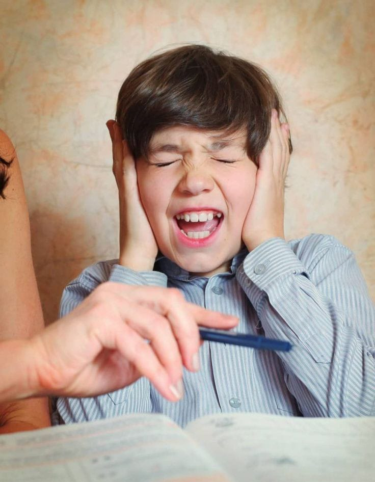

Muitas pessoas com autismo sentem incômodo com sons que, às vezes, passam despercebidos pela maioria muitos autistas têm hipersensibilidade auditiva, para as ]
crianças mais novas, ainda aprendendo
a lidar com as sensações, o problema é potencializado. Até mesmo
sendo um podendo ser um entrave ou barreira no processo de inclusão escolar e adaptação destes indivíduos, visto que estes
tendem
a ter uma resposta sensorial amplificada da maioria
A hipersensibilidade auditiva é comum em pessoas com autismo. Elas têm uma resposta exagerada a estímulos sonoros cotidianos, pois as áreas do cérebro responsáveis pelo processamento auditivo são hipersensíveis. Isso pode levar a ansiedade, desconforto, entre outros comportamentos
A primeira de suas reações é tampar os ouvidos, Cobrir os ouvidos: Muitas pessoas autistas podem cobrir os ouvidos para tentar bloquear o som que está causando desconforto, Elas podem tentar sair do local rapidamente para evitar o barulho1. Respostas físicas: Algumas podem bater palmas, gritar ou fazer outros movimentos repetitivos como uma forma de lidar com o desconforto. Estresse e ansiedade: A exposição a sons perturbadores pode levar a altos níveis de estresse e ansiedade1. Essas reações são uma forma de tentar lidar com a sobrecarga sensorial que o barulho pode causar. Cada pessoa autista é única, então as reações podem variar bastante de uma para outra.
Para que a sensibilidade sensorial não tenha tantos impactos negativos na vida do autista, alguns cuidados precisam ser tomados. Isso vai desde evitar os gatilhos e tornar os ambientes mais inclusivos, até terapias que ajudam a processar melhor os estímulos sensoriais. Envolve uma combinação de estratégias práticas e compreensão empática. Lidar com uma criança autista é praticar a paciencia e aprender algo novo, todos os dias será uma lição diferente, cada crise, é um epsódio diferente, manter a sua própria calma e paciência são cruciais. A criança pode perceber a sua ansiedade e isso pode aumentar a sua própria. Use um tom de voz tranquilo, avalie todo o ambiente, e dê um abraço forte em sua criança. Cada criança é única, então o que funciona pode variar.
Clara Fluegge - SI